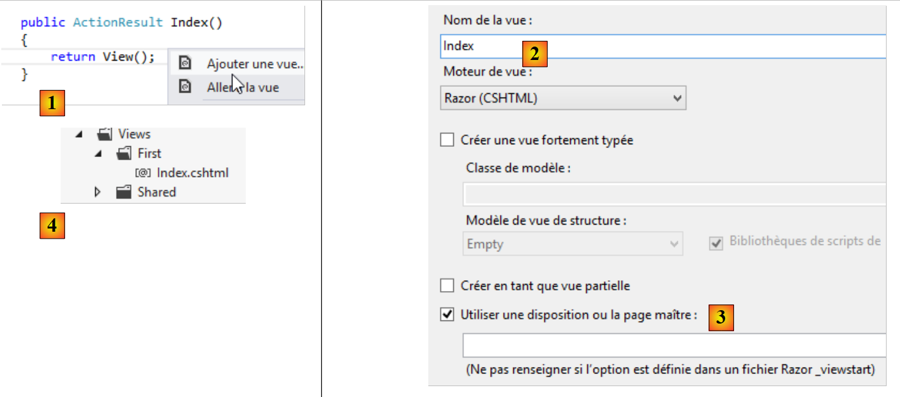
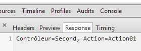

3. Controladores, Acciones, Enrutamiento
Consideremos la arquitectura de una aplicación ASP.NET MVC:
 |
En este capítulo, examinamos el proceso que dirige la petición [1] al controlador y la acción [2a] que la procesará, un mecanismo conocido como enrutamiento. También presentamos las distintas respuestas [3] que una acción puede devolver al navegador. Esto puede ser algo distinto de una vista V [4b].
3.1. Estructura de un proyecto ASP.NET
Vamos a construir nuestro primer proyecto ASP.NET MVC utilizando Visual Studio Express 2012. Lo añadiremos [1] a la solución utilizada en el capítulo anterior:
 |
 |
- en [2], el nombre del nuevo proyecto;
- en [3, 4], elegimos un proyecto ASP.NET MVC básico. Esta plantilla nos proporciona una aplicación web vacía que, sin embargo, incluye todos los recursos (bibliotecas DLLs, JavaScript, etc.) necesarios para empezar.
El proyecto resultante se muestra en [5]. Lo convertiremos en [6] el proyecto inicial de la solución:
 |
Observa los siguientes puntos en [5]:
- la arquitectura del proyecto refleja su modelo MVC:
- C los controladores se colocarán en la carpeta [Controladores],
- M los modelos de datos se colocarán en la carpeta [Modelos],
- V las vistas se colocarán en la carpeta [Vistas],
 |
- en [1], el archivo [Site.css] será el archivo CSS predeterminado de la aplicación;
- en [2], hay disponibles varias bibliotecas JavaScript;
- en [3], existen tres puntos de vista específicos: _ViewStart, _Layout y Error.
El archivo [_ViewStart] es el siguiente:
@{
Layout = "~/Views/Shared/_Layout.cshtml";
}
- Línea 1: El carácter @ marca el inicio de un bloque C# dentro de la vista. Efectivamente, se puede incluir código C# en una vista;
- línea 2: define un Diseño que especifica la vista padre para todas las vistas. Corresponde a la página maestra en el marco clásico ASP.NET.
El archivo [ _Layout es la siguiente:
<!DOCTYPE html>
<html>
<head>
<meta charset="utf-8" />
<meta name="viewport" content="width=device-width" />
<title>@ViewBag.Title</title>
@Styles.Render("~/Content/css")
@Scripts.Render("~/bundles/modernizr")
</head>
<body>
@RenderBody()
@Scripts.Render("~/bundles/jquery")
@RenderSection("scripts", required: false)
</body>
</html>
Cuando una vista de la carpeta [Views] es renderizada, su cuerpo será renderizado por la línea 11 anterior. Esto significa que la vista no necesita incluir las etiquetas <html>, <head> y <body>. Estos son proporcionados por el archivo de arriba. Por ahora, este archivo es bastante críptico. Vamos a simplificarlo:
<!DOCTYPE html>
<html>
<head>
<meta charset="utf-8" />
<meta name="viewport" content="width=device-width" />
<title>ASP.NET MVC Tutorial</title>
</head>
<body>
<h2>ASP.NET MVC Tutorial</h2>
@RenderBody()
</body>
</html>
- línea 6: el título común a todas las vistas;
- línea 9: la cabecera común a todas las vistas;
- línea 10: el contenido específico de la vista visualizada.

- [Web.config] es el archivo de configuración de la aplicación web. Es complejo. Tendrás que modificarlo cuando utilices el framework [Spring.net] en una arquitectura multinivel.
- [Global.asax] contiene el código que se ejecuta cuando se inicia la aplicación. Generalmente, este código utiliza los distintos archivos de configuración de la aplicación, incluido [Web.config].
3.2. Enrutamiento URL por defecto
El código en [Global.asax] es actualmente el siguiente:
using System.Web.Http;
using System.Web.Mvc;
using System.Web.Optimization;
using System.Web.Routing;
namespace Example_01
{
public class MvcApplication : System.Web.HttpApplication
{
protected void Application_Start()
{
...
}
}
}
- Línea 6: la clase espacio de nombres. Se deriva directamente del nombre del proyecto y aparece en las propiedades del proyecto:

 |
Establecemos [1] como espacio de nombres por defecto. A continuación, se utiliza por defecto para todas las clases que se crearán en el proyecto.
Volvamos al código en [Global.asax]:
using System.Web.Http;
using System.Web.Mvc;
using System.Web.Optimization;
using System.Web.Routing;
namespace Example_01
{
public class MvcApplication : System.Web.HttpApplication
{
protected void Application_Start()
{
...
}
}
}
- línea 9: la clase [MvcApplication] deriva de la clase [HttpApplication]. El nombre [MvcApplication] se puede cambiar;
- línea 11: El método [Application_Start] es el método que se ejecuta cuando se inicia la aplicación web. Se ejecuta una sola vez. Aquí es donde se inicializa la aplicación.
El código de [Application_Start] es actualmente el siguiente:
protected void Application_Start()
{
AreaRegistration.RegisterAllAreas();
WebApiConfig.Register(GlobalConfiguration.Configuration);
FilterConfig.RegisterGlobalFilters(GlobalFilters.Filters);
RouteConfig.RegisterRoutes(RouteTable.Routes);
BundleConfig.RegisterBundles(BundleTable.Bundles);
}
For now, you don’t need to understand all of this code. Lines 5–8 define the routes accepted by the web application. Let’s return to the architecture of an ASP.NET MVC application:
 |
Explicamos que el [Controlador Frontal] debe encaminar un URL a la acción responsable de manejarlo. Una ruta se utiliza para vincular un patrón URL a una acción. Estas rutas se definen en la carpeta [App_Start] del proyecto mediante las clases [WebApiConfig, FilterConfig, RouteConfig, BundleConfig]:

For now, we are only interested in the [RouteConfig] class:
using System.Web.Mvc;
using System.Web.Routing;
namespace Example_01
{
public class RouteConfig
{
public static void RegisterRoutes(RouteCollection routes)
{
routes.IgnoreRoute("{resource}.axd/{*pathInfo}");
routes.MapRoute(
name: "Default",
url: "{controller}/{action}/{id}",
defaults: new { controller = "Home", action = "Index", id = UrlParameter.Optional }
);
}
}
}
Las líneas 12-16 definen el formato del URLs aceptado por la aplicación. Esto se denomina ruta. Puede haber múltiples rutas posibles (= múltiples patrones URL posibles). Se distinguen entre sí por su nombre (línea 13). El formato del URLs de la ruta se define en la línea 14. Aquí, el URL tendrá tres componentes:
- {controlador}: el nombre de una clase derivada de [Controlador]. Se buscará en la carpeta [Controladores] del proyecto. Por convención, si el URL es /X/Y/Z, el controlador responsable de manejar este URL será el XController clase. El sufijo Controlador se añade al nombre del controlador presente en el URL;
- {acción}: el nombre de un método en el controlador especificado anteriormente. Este método recibirá los parámetros que acompañan al URL y los procesará. Este método puede devolver varios resultados:
- void: la acción construirá la respuesta al propio navegador del cliente
- Cadena: la acción devuelve una cadena al cliente;
- ViewResult: devuelve una vista al cliente;
- PartialViewResult: devuelve una vista parcial;
- EmptyResult: se envía una respuesta vacía al cliente;
- RedirectResult: ordena al cliente que redirija a un URL
- RedirectToRouteResult: igual que el anterior, pero el URL se construye a partir de las rutas de la aplicación;
- JsonResult: envía una respuesta JSON
- JavaScriptResult: devuelve el código JavaScript al cliente;
- ContentResult: devuelve un flujo HTML al cliente sin pasar por una vista;
- FileContentResult: devuelve un archivo al cliente;
- FileStreamResult: lo mismo que arriba, pero a través de un método diferente;
- FilePathResult: ...
- {id}: un parámetro que se pasará a la acción. Para que esto funcione, la acción debe tener un parámetro llamado id.
La línea 15 define valores por defecto cuando el URL no tiene el formato esperado /{controlador}/{acción}/{id}. También indica que el {id} en el URL es opcional. A continuación se muestra una lista de URLs incompletos y el URL completado con los valores por defecto:
Original URL | Completado URL |
/ | /Inicio/índice |
/Hacer | /Hacer/Indice |
/Hacer/Algo | /Hacer/Algo |
/Hacer/Algo/4 | /Hacer/Algo/4 |
/Hacer/algo/x/y/z | No encaminado URL |
3.3. Crear un controlador y una primera acción
Vamos a crear un primer controlador:

 |
- En [1], introduzca el nombre del controlador con el sufijo [Controlador];
- en [2], crear un controlador MVC vacío;
- en [3], se ha creado.
El código de [FirstController] es el siguiente:
using System;
using System.Collections.Generic;
using System.Linq;
using System.Web;
using System.Web.Mvc;
namespace Example_01.Controllers
{
public class FirstController : Controller
{
//
// GET: /First/
public ActionResult Index()
{
return View();
}
}
}
- línea 7: a default espacio de nombres se ha generado;
- línea 9: la clase [FirstController] deriva de la clase [System.Web.Mvc.Controller];
- líneas 14-17: se ha generado por defecto una acción [Index]. Es público. Esto es importante; de lo contrario, no se encontrará. Devuelve un tipo [ActionResult], que es una clase abstracta de la que se derivan la mayoría de los resultados típicamente devueltos por una acción. Se trata de un tipo "comodín" que puede especificarse sustituyéndolo por el nombre real del tipo devuelto;
- Línea 16: El método no hace nada. Simplemente devuelve una vista, i.e., un tipo [ViewResult]. No se especifica el nombre de la vista. En este caso, el framework busca en la carpeta [Views/First] una vista con el mismo nombre que la acción, que aquí es [Index.cshtml].
Vamos a crear la vista [Index.cshtml]:
 |
- en [1], haga clic con el botón derecho del ratón en el código de acción y seleccione la opción [Añadir vista];
- en [2], el asistente sugiere una vista con el mismo nombre que la acción. Esto es lo que queremos aquí;
- en [3], por defecto, se sugiere el uso de la página maestra [_Layout.cshtml];
- en [4], una vez confirmado, el asistente crea la vista en una subcarpeta de la carpeta [Views] con el nombre del controlador (First).
El código generado para la vista [Índice] es el siguiente:
@{
ViewBag.Title = "Index";
}
<h2>Index</h2>
- Líneas 1-3: Código C# que define una variable;
- línea 5: una etiqueta HTML.
Sustituye todo el código anterior por esto:
<strong>View [Index]...</strong>
Resumiendo:
- tenemos un C# controlador llamado [Primero];
- tenemos una acción llamada [Índice] que solicita la visualización de una vista llamada [Índice];
- tenemos la vista V [Índice].
Podemos llamar a la acción [Índice] de dos maneras:
- /Primera/Index;
- /Primero, ya que [Índice] es también la acción por defecto en las rutas.
Vamos a ejecutar la aplicación (CTRL-F5). Obtenemos la siguiente página:

En [1], el URL solicitado era http://localhost:49302. No hay ruta. Sabemos que nuestro router espera URLs en la forma /{controlador}/{acción}/{id}. Como faltan estos elementos, se utilizan los valores por defecto. El URL pasa a ser http://localhost:49302/Home/Index. El controlador [Inicio] no existe. Por lo tanto, el URL es rechazado.
Ahora vamos a probar el URL http://localhost:49302/First/Index escribiéndola directamente en el navegador:
 |
La página anterior fue generada por la acción [Índice] del controlador [Primero]. La página generada por esta acción es la vista [Índice], cuyo código era el siguiente:
<strong>[Index] view...</strong>
Genera la parte [1]. La parte [2], por su parte, proviene de la página maestra [_Layout] que definimos anteriormente:
<!DOCTYPE html>
<html>
<head>
<meta charset="utf-8" />
<meta name="viewport" content="width=device-width" />
<title>ASP.NET MVC Tutorial</title>
</head>
<body>
<h2>ASP.NET MVC Tutorial</h2>
@RenderBody()
</body>
</html>
La línea 9 generó la sección [2] de la página. Sin embargo, la vista [Índice] sólo aparece en la línea 10.
If we view the source code of the received page, we can see that the [Index] page is indeed included (line 10 below) in the [Layout] page:
Ahora probemos el URL [/Primero]:

El URL [/Primero] estaba incompleto. Se completó con los valores por defecto de la ruta y se convirtió en [/First/Index]. Por lo tanto, obtenemos el mismo resultado que antes.
3.4. Acción con un resultado de tipo [ContentResult] - 1
Vamos a crear una nueva acción en el controlador [Primero]:
using System.Text;
using System.Web.Mvc;
namespace Example_01.Controllers
{
public class FirstController : Controller
{
// Index
public ViewResult Index()
{
return View();
}
// Action01
public ContentResult Action01()
{
return Content("<h1>Action [Action01]</h1>", "text/plain", Encoding.UTF8);
}
}
}
La nueva acción se define en las líneas 14-18. Simplemente devuelve una cadena utilizando el método [Content] (línea 16) de la clase [Controller] (línea 6). Los parámetros del método son:
- la cadena de respuesta;
- un indicador del tipo de texto que se envía: "text/plain", "text/html", "text/xml", etc. Este indicador se denomina tipo MIME (http://fr.wikipedia.org/wiki/Type_MIME);
- el tercer parámetro especifica el tipo de codificación utilizado para el texto.
En lugar de utilizar el tipo abstracto [ActionResult], nuestros métodos especifican el tipo de retorno real (líneas 9 y 14).
Vamos a solicitar el URL [/First/Action01]. Obtendremos la siguiente página:

Veamos el código fuente de la página recibida:
El navegador sólo recibe el texto enviado por la acción y nada más. Este modo es útil cuando desea solicitar datos sin procesar del servidor web sin el marcado HTML circundante. Observe que el navegador no interpretó la etiqueta HTML <h1>. Para entender por qué, veamos los intercambios HTTP en Chrome:
El navegador envió las siguientes cabeceras HTTP:
El servidor respondió con las siguientes cabeceras:
- Línea 3: establece el tipo de documento. Vemos los atributos establecidos en el método [Action01]. Es porque se le dijo al navegador que el documento era de tipo "text/plain" y no "text/html" que no interpretó la etiqueta <h1> que había en el documento recibido.
3.5. Acción con un resultado de tipo [ContentResult] - 2
Consideremos la siguiente tercera acción:
using System.Text;
using System.Web.Mvc;
namespace Example_01.Controllers
{
public class FirstController : Controller
{
...
// Action02
public ContentResult Action02()
{
string data = "<action><name>Action02</name><description>returns XML text</description></action>";
return Content(data, "text/xml", Encoding.UTF8);
}
}
}
- línea 12: definimos un texto XML;
- línea 13: lo enviamos al navegador, especificando que es XML con el tipo MIME "text/xml".
En el navegador, obtenemos la siguiente página:

Veamos la respuesta HTTP del servidor en Chrome:
- Línea 3: especifica el tipo de documento. Aquí se incluyen los atributos establecidos en el método [Action02];
- Línea 12: El tamaño en bytes del documento enviado por el servidor.
El documento enviado por el servidor es éste (captura de pantalla de Chrome):

3.6. Acción con un resultado de tipo [JsonResult]
Vamos a añadir la siguiente acción al controlador [Primero]:
// Action03
public JsonResult Action03()
{
dynamic person = new ExpandoObject();
person.name = "someone";
person.age = 20;
return Json(person, JsonRequestBehavior.AllowGet);
}
- línea 4: una variable de tipo dinámico. En tiempo de ejecución, se pueden añadir libremente propiedades a una variable de este tipo. La propiedad se crea al mismo tiempo que se inicializa;
- líneas 5-6: inicializamos dos propiedades, nombre y edad;
- línea 7: devuelve la representación JSON (JavaScript Object Notation) del objeto. JSON permite serializar un objeto en una cadena y, a la inversa, deserializar una cadena en un objeto. Es una alternativa a la serialización/deserialización XML;
- línea 2: la acción devuelve un tipo [JsonResult]. Este tipo sólo puede ser devuelto para una petición POST. Si desea devolverlo para un método GET, debe establecer el segundo parámetro del constructor de la clase Json (línea 7) en JsonRequestBehavior.AllowGet.
Al solicitar el URL [/First/Action03], el navegador muestra lo siguiente:

La respuesta HTTP del servidor es la siguiente:
- Línea 3: especifica que el documento enviado es JSON;
- línea 10: el documento enviado es de 58 bytes. Es el siguiente:
El elemento dinámico [persona] es visto por JSON como una matriz de diccionarios donde cada diccionario:
- corresponde a un campo de la variable [persona];
- tiene dos claves, "Clave" y "Valor" "Clave" tiene el nombre del campo como valor asociado, y "Valor" tiene el valor del campo.
3.7. Acción con un resultado [cadena
Vamos a añadir la siguiente acción al controlador [Primero]:
// Action04
public string Action04()
{
return "<h3>Controller=First, Action=Action04</h3>";
}
Cuando solicitamos el URL [/First/Action04] en Chrome, obtenemos la siguiente respuesta:

Podemos ver que la etiqueta <h3> ha sido interpretada. Veamos la respuesta HTTP del servidor:
y el siguiente documento:
Como se ve en la línea 3, el servidor indicó que estaba enviando texto en formato HTML. Esta es la razón por la que el navegador interpretó la etiqueta <h3>. Por lo tanto, cuando desee enviar texto sin formato, es preferible devolver un [ContentResult] en lugar de una [cadena]. El [ContentResult] nos permite especificar un tipo MIME de "text/plain" para indicar que estamos enviando texto sin formato, que el navegador no intentará interpretar.
3.8. Acción de tipo [EmptyResult]
Considere la siguiente nueva acción:
// Action05
public EmptyResult Action05()
{
return new EmptyResult();
}
La acción simplemente devuelve un tipo [EmptyResult]. En este caso, el servidor envía una respuesta vacía al cliente, como se muestra en su respuesta HTTP:
- Línea 9: El servidor informa a su cliente de que está enviando un documento vacío.
3.9. Acción con un resultado de tipo [RedirectResult] - 1
Considere la siguiente nueva acción:
// Action06
public RedirectResult Action06()
{
return new RedirectResult("/First/Action05");
}
La acción devuelve un tipo [RedirectResult]. Este tipo permite enviar una petición de redirección al cliente al URL especificado en el constructor (línea 4). A continuación, el cliente enviará una nueva petición GET a [/First/Action05]. Por lo tanto, el cliente realiza dos peticiones en total.
El navegador muestra el resultado de la segunda petición:

Examinemos la respuesta HTTP del servidor en Chrome:

Arriba, vemos las dos peticiones del navegador. Examinemos la primera petición [Action06]. La respuesta HTTP del servidor es la siguiente:
- Línea 1: El servidor respondió con un código de estado 302 Encontrado. Anteriormente, era 200 OK, lo que significa que se encontró el documento solicitado. El código 302 indica que se solicita una redirección. La redirección URL se proporciona en la línea 4. Esto coincide con la redirección URL que especificamos en el código de acción;
- Línea 11: El servidor indica que con su respuesta HTTP está enviando un documento text/html (línea 3) de 132 bytes (línea 11). Cuando examinamos la respuesta a la petición [Action06] en Chrome, está vacía, como era de esperar. Probablemente haya una explicación, pero no sé cuál es.
Debido a la redirección, el navegador realiza una nueva petición GET al URL especificado en la línea 4 anterior, como puede verse en Chrome en la línea 1 siguiente:
3.10. Acción con un resultado de tipo [RedirectResult] - 2
Considere la siguiente nueva acción:
// Action07
public RedirectResult Action07()
{
return new RedirectResult("/First/Action05", true);
}
En la línea 4, añadimos un segundo parámetro al constructor [RedirectResult]. Es un booleano que por defecto es falso. Cuando se ajusta a verdadero, modifica la respuesta HTTP enviada al cliente. Se convierte en:
Así, el código de respuesta enviado al cliente es ahora 301 Movido permanentemente. La redirección se produce como antes, pero indicamos que esta redirección es permanente. Esto permite a los motores de búsqueda sustituir el antiguo URL por el nuevo en sus resultados.
3.11. Acción con un resultado de tipo [RedirectToRouteResult]
Considere la siguiente nueva acción:
// Action08
public RedirectToRouteResult Action08()
{
return new RedirectToRouteResult("Default", new RouteValueDictionary(new { controller = "First", action = "Action05" }));
}
- Línea 2: La acción devuelve un tipo [RedirectToRouteResult]. Este tipo permite redirigir a un cliente a un URL especificado, no a través de una cadena como antes, sino a través de una ruta.
Las rutas se definen en [App_Start/RouteConfig]. Actualmente sólo hay una:
routes.MapRoute(
name: "Default",
url: "{controller}/{action}/{id}",
defaults: new { controller = "Home", action = "Index", id = UrlParameter.Optional }
);
- En la línea 4, se indica al cliente que redirija a la ruta denominada [Default] con la variable de controlador establecida en "First" y la variable de acción establecida en "Action05". El sistema de enrutamiento generará entonces la redirección URL /Primera/Acción05. Esto se muestra en la respuesta HTTP del servidor:
- línea 1: la redirección;
- línea 4: la redirección URL generada por el sistema de enrutamiento URL.
3.12. Acción con tipo de retorno [void]
Considere la siguiente nueva acción:
// Action09
public void Action09()
{
string name = Request.QueryString["name"] ?? "unknown";
Response.AddHeader("Content-Type", "text/plain");
Response.Write(string.Format("<h3>Action09</h3>name={0}", name));
}
- línea 2: la acción no devuelve ningún resultado. Escribe directamente en el flujo de respuesta enviado al cliente;
- línea 4: recuperamos un parámetro potencial llamado [nombre] de la petición. Se puede acceder a él mediante el parámetro [Solicitar] de la clase [Controller] de la que hereda el controlador [First]. El parámetro [name] pasado de la forma [/First/Action09?name=algo] está disponible en Request.QueryString["name"]. La sintaxis de la línea 4 es equivalente a:
- línea 5: la respuesta enviada al cliente es accesible a través de la [Respuesta] de la clase [Controller] de la que hereda el controlador [First];
- línea 5: establecemos la cabecera [Content-Type] HTTP, que indica la naturaleza del documento que el servidor va a enviar al cliente. Aquí, "text/plain" indica que el documento es texto plano que no debe ser interpretado por el navegador;
- línea 6: escribimos una cadena de caracteres en el cuerpo de la respuesta. Hemos incluido etiquetas HTML que no deben ser interpretadas por el navegador, ya que éste habrá recibido previamente la cabecera HTTP [Content-Type: text/plain]. Esto es lo que queremos verificar.
Compilemos el proyecto y solicitemos el URL [/Primera/Acción09?name=alguien ][1] y luego el URL [/Primera/Acción09 ][2]:
 |
Ahora veamos la respuesta HTTP del servidor en Chrome:
- línea 3: vemos la cabecera HTTP que configuramos nosotros mismos en el código de la acción.
3.13. Un segundo controlador
Vamos a crear un segundo controlador en el proyecto. Seguiremos el método descrito en la sección 3.1, en la página36 . Lo llamaremos [Segundo].

El código generado es el siguiente
namespace Example_01.Controllers
{
public class SecondController : Controller
{
//
// GET: /Second/
public ActionResult Index()
{
return View();
}
}
}
Modifiquémoslo como sigue:
using System.Text;
using System.Web.Mvc;
namespace Example_01.Controllers
{
public class SecondController : Controller
{
// /Second/Action01
public ContentResult Action01()
{
return Content("Controller=Second, Action=Action01", "text/plain", Encoding.UTF8);
}
}
}
A continuación, vamos a solicitar el URL [/Segundo/Acción01] utilizando un navegador. Obtenemos la siguiente respuesta:

Este URL se solicitó utilizando una solicitud HTTP GET, como se muestra en los registros HTTP de la solicitud en Chrome:
El URL también puede solicitarse mediante una petición HTTP POST. Para demostrarlo, volvamos a utilizar la aplicación [Advanced Rest Client]:
 |
- En [1], inicia la aplicación (en la pestaña [Aplicaciones] de una nueva pestaña de Chrome);
- en [2], seleccione la opción [Solicitar];
- en [3], especifique el URL solicitado;
- en [4], especifican que el URL debe solicitarse utilizando una petición POST;
Activamos los registros de Chrome (CTRL-I) para ver la respuesta HTTP del servidor. Cuando hacemos clic en [Enviar] para ejecutar la solicitud anterior, los intercambios HTTP son los siguientes:
El navegador envía la siguiente petición:
- línea 1: el URL se solicita efectivamente con un POST;
- Línea 4: El tamaño en bytes de los elementos publicados. Aquí no hay ninguno.
La respuesta HTTP del servidor es la siguiente:
- línea 3: el servidor envía un documento de texto sin formato (plano);
- línea 12: 148 caracteres.
El documento enviado es el siguiente:

Obtenemos el mismo documento que con la solicitud GET.
3.14. Acción filtrada por un atributo
Creemos la siguiente nueva acción:
// /Second/Action02
[HttpPost]
public ContentResult Action02()
{
return Content("Controller=Second, Action=Action02", "text/plain", Encoding.UTF8);
}
La acción [Action02] es similar a la acción [Action01], pero especifica que sólo es accesible a través de una petición HTTP POST (línea 2). Se pueden utilizar otros atributos:
HttpGet | atiende sólo la petición GET |
HttpHead | atiende sólo la petición HEAD |
HttpOptions | sólo admite el comando OPTIONS |
HttpPut | sólo admite el comando PUT |
HttpDelete | sólo se utiliza para el comando DELETE |
Vamos a solicitar el URL [/Segundo/Acción02] directamente en el navegador. A continuación, se solicita a través de un GET. El navegador muestra entonces la siguiente respuesta:

La respuesta HTTP del servidor fue la siguiente:
- Línea 1: El código HTTP 404 no encontrado indica que el servidor no pudo encontrar el documento solicitado. En este caso, la acción [Action02] no pudo gestionar la petición GET porque sólo gestiona peticiones POST;
- Línea 3: El tamaño del documento devuelto. Esta es la página que ha mostrado el navegador:

3.15. Recuperar elementos de una ruta
En las dos acciones descritas anteriormente, escribimos algo como:
public ContentResult Action02()
{
return Content("Controller=Second, Action=Action02", "text/plain", Encoding.UTF8);
}
Los nombres del controlador y de la acción estaban codificados en el código. Si cambiamos estos nombres, el código ya no es correcto. Podemos acceder al controlador y la acción de la siguiente manera:
// /Second/Action03
public ContentResult Action03()
{
string text = string.Format("Controller={0}, Action={1}", RouteData.Values["controller"], RouteData.Values["action"]);
return Content(text, "text/plain", Encoding.UTF8);
}
La ruta definida en [App_Start/RouteConfig] es la siguiente:
routes.MapRoute(
name: "Default",
url: "{controller}/{action}/{id}",
defaults: new { controller = "Home", action = "Index", id = UrlParameter.Optional }
);
Línea 3: Los tres elementos de la ruta pueden recuperarse utilizando RouteData.Values["element"], donde elemento es uno de [controlador, acción, id].
Vamos a solicitar el URL [http://localhost:49302/Second/Action03]:

Hemos recuperado con éxito tanto el nombre del controlador como el nombre de la acción.